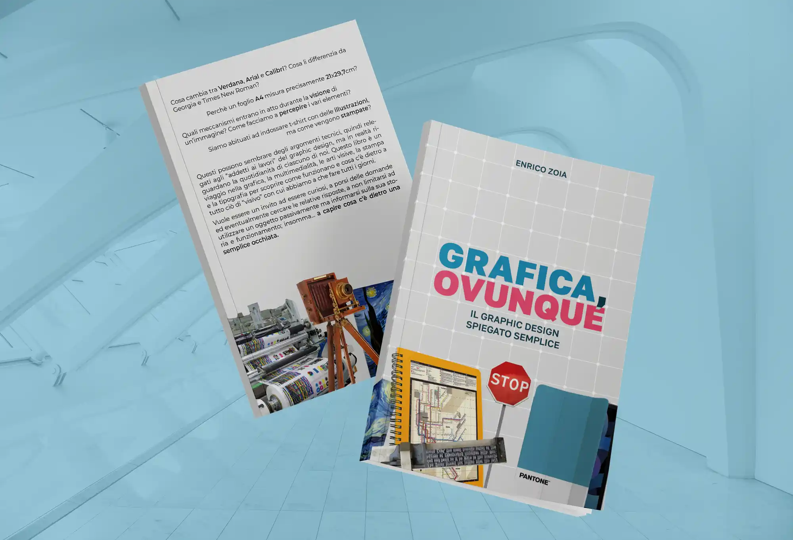
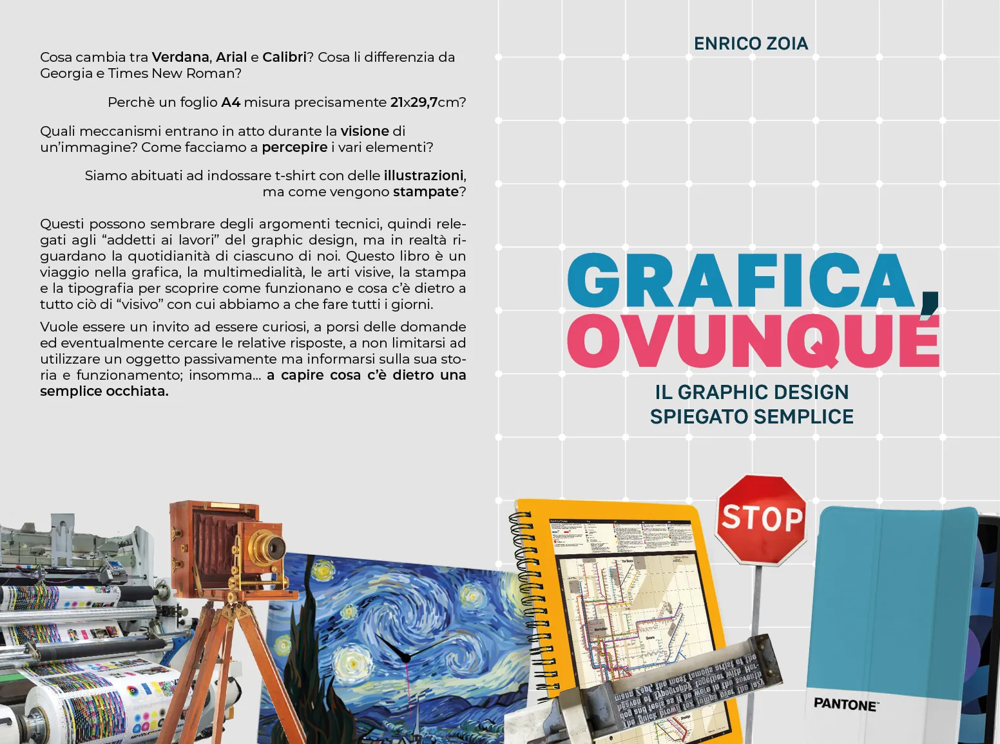
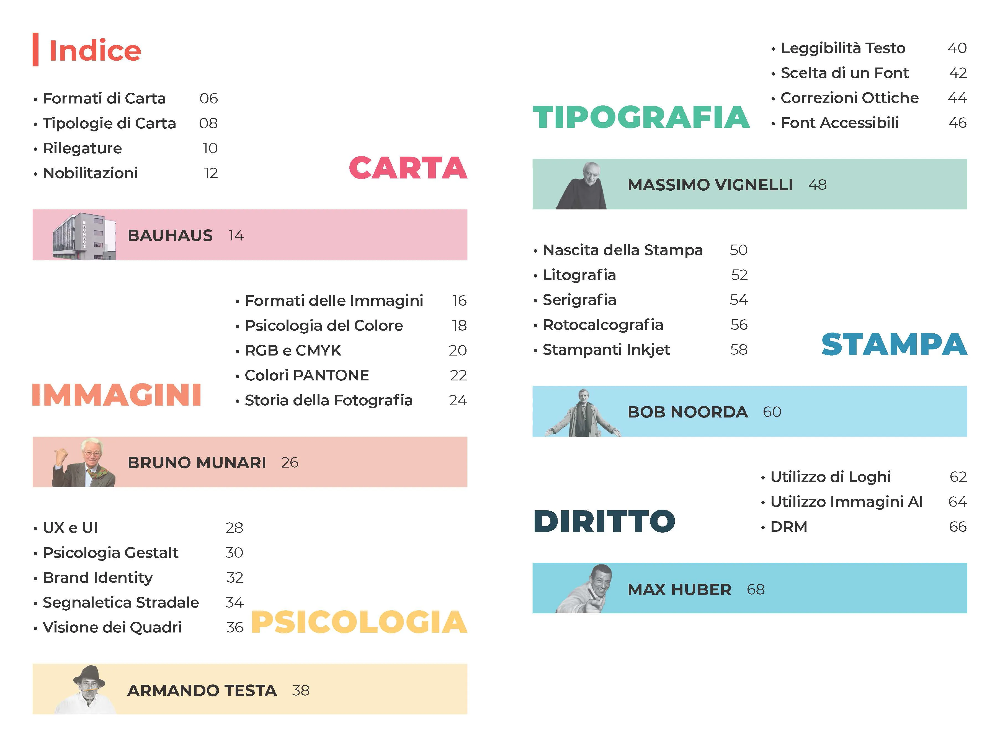

Un giorno, durante lo studio dei colori PANTONE, mi resi conto che dietro al brand e agli iconici
colori che tutti siamo abituati a vedere su vari gadget c'è un enorme mondo legato alla grafica
e
alla stampa. Da qui nasce l'idea di scrivere un libro nel quale raccontare ciò
di
cui usufruiamo quotidianamente dal punto di vista del graphic design, spiegando quindi cosa c'è
dietro a oggetti apparentemente banali.
Ad esempio: come mai i fogli A4 hanno quelle
specifiche
dimensioni? In cosa si differenziano le decine di font presenti su Word? Quali meccanismi di
percezione visiva entrano in atto durante la visione di un quadro?
L'obiettivo del libro è
quindi arricchire la cultura personale del lettore su tematiche considerate di nicchia ma che
riguardano tutti noi e, se spiegate semplice, possono appassionare chiunque.
Mi sono dedicato interamente al libro, curandone la scrittura vera e propria e
l'impaginazione. È
stato suddiviso in 6 macrocategorie, tra le quali ho deciso di inserire degli intermezzi
dedicati a
grandi designer prevalentemente italiani dello scorso secolo per arricchire la cultura storica
del
lettore e far conoscere la storia dietro a loghi e poster tutt'ora diffusi.
Settembre 2024

